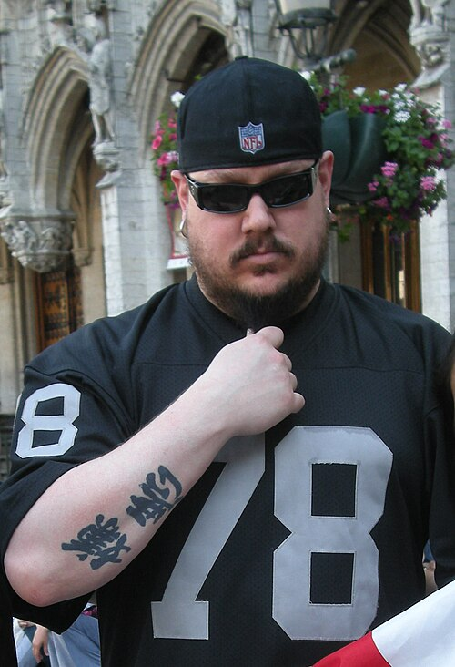
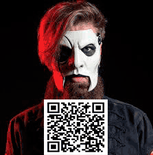
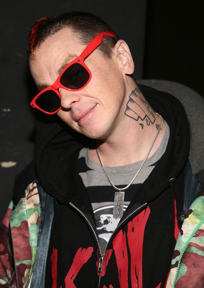
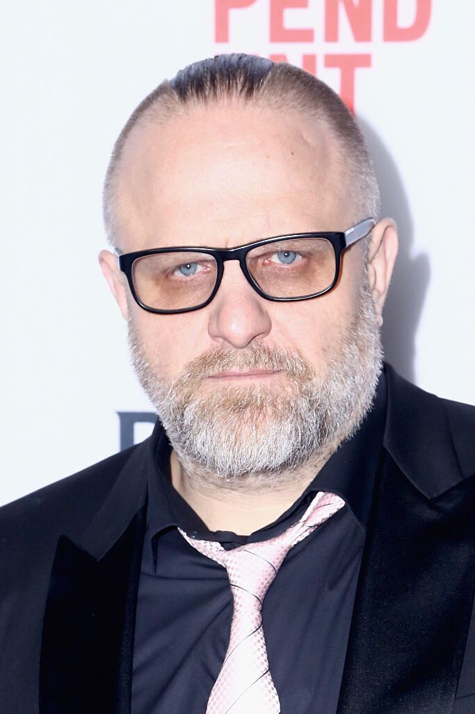
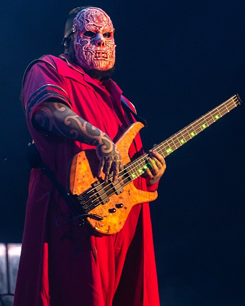
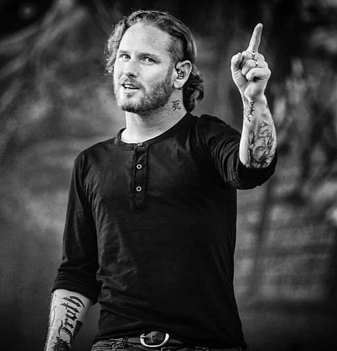
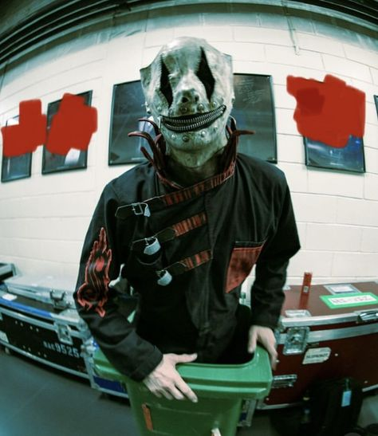
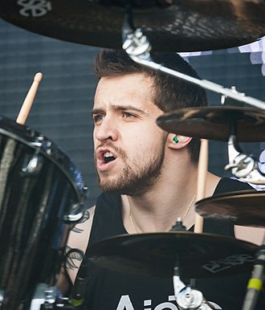

1971, 2 октября
Американский гитарист, играет в группе Slipknot.
Джеймс ушёл из группы Stone Sour и присоединился к Slipknot
Его
маска выполнена из латекса белог цвета, с обрезанным подбородком и с чёрными глазами.

1977, 20 января
американский музыкант, участник группы Slipknot и основатель своего сольного проекта DJ Starscream и является участникм Slipknot
имеет маску-противгаз.

1969, 24 сентября
Основатель группы Slipkot
В основном носит маску клоуна с кусочками зеркал.

Дата рождения не известна.
Раньше ремонтировал гитары, но сейчас является басистом Slipknot

1973, 8 декабря
Прожил тяжёлое детство, но спустя годы стал фронтменом Slipknot

1980, 17 мая
американский музыкант, наиболее известный как один из ударников Slipknot

1991, 29 января
Мало что известно о нём на данный момент. Является барабанщиком Slipknot.

Вообще ничего не известно, играет на клавишных